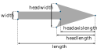

matplotlib.quiver.Quiver#
- class matplotlib.quiver.Quiver(ax, *args, scale=None, headwidth=3, headlength=5, headaxislength=4.5, minshaft=1, minlength=1, units='width', scale_units=None, angles='uv', width=None, color='k', pivot='tail', **kwargs)[source]#
Bases:
PolyCollectionSpecialized PolyCollection for arrows.
The only API method is set_UVC(), which can be used to change the size, orientation, and color of the arrows; their locations are fixed when the class is instantiated. Possibly this method will be useful in animations.
Much of the work in this class is done in the draw() method so that as much information as possible is available about the plot. In subsequent draw() calls, recalculation is limited to things that might have changed, so there should be no performance penalty from putting the calculations in the draw() method.
The constructor takes one required argument, an Axes instance, followed by the args and kwargs described by the following pyplot interface documentation:
Plot a 2D field of arrows.
Call signature:
quiver([X, Y], U, V, [C], **kwargs)
X, Y define the arrow locations, U, V define the arrow directions, and C optionally sets the color.
Arrow length
The default settings auto-scales the length of the arrows to a reasonable size. To change this behavior see the scale and scale_units parameters.
Arrow shape
The arrow shape is determined by width, headwidth, headlength and headaxislength. See the notes below.
Arrow styling
Each arrow is internally represented by a filled polygon with a default edge linewidth of 0. As a result, an arrow is rather a filled area, not a line with a head, and
PolyCollectionproperties like linewidth, edgecolor, facecolor, etc. act accordingly.- Parameters:
- X, Y1D or 2D array-like, optional
The x and y coordinates of the arrow locations.
If not given, they will be generated as a uniform integer meshgrid based on the dimensions of U and V.
If X and Y are 1D but U, V are 2D, X, Y are expanded to 2D using
X, Y = np.meshgrid(X, Y). In this caselen(X)andlen(Y)must match the column and row dimensions of U and V.- U, V1D or 2D array-like
The x and y direction components of the arrow vectors. The interpretation of these components (in data or in screen space) depends on angles.
U and V must have the same number of elements, matching the number of arrow locations in X, Y. U and V may be masked. Locations masked in any of U, V, and C will not be drawn.
- C1D or 2D array-like, optional
Numeric data that defines the arrow colors by colormapping via norm and cmap.
This does not support explicit colors. If you want to set colors directly, use color instead. The size of C must match the number of arrow locations.
- angles{'uv', 'xy'} or array-like, default: 'uv'
Method for determining the angle of the arrows.
'uv': Arrow direction in screen coordinates. Use this if the arrows symbolize a quantity that is not based on X, Y data coordinates.
If U == V the orientation of the arrow on the plot is 45 degrees counter-clockwise from the horizontal axis (positive to the right).
'xy': Arrow direction in data coordinates, i.e. the arrows point from (x, y) to (x+u, y+v). Use this e.g. for plotting a gradient field.
Arbitrary angles may be specified explicitly as an array of values in degrees, counter-clockwise from the horizontal axis.
In this case U, V is only used to determine the length of the arrows.
Note: inverting a data axis will correspondingly invert the arrows only with
angles='xy'.- pivot{'tail', 'mid', 'middle', 'tip'}, default: 'tail'
The part of the arrow that is anchored to the X, Y grid. The arrow rotates about this point.
'mid' is a synonym for 'middle'.
- scalefloat, optional
Scales the length of the arrow inversely.
Number of data units per arrow length unit, e.g., m/s per plot width; a smaller scale parameter makes the arrow longer. Default is None.
If None, a simple autoscaling algorithm is used, based on the average vector length and the number of vectors. The arrow length unit is given by the scale_units parameter.
- scale_units{'width', 'height', 'dots', 'inches', 'x', 'y', 'xy'}, optional
If the scale kwarg is None, the arrow length unit. Default is None.
e.g. scale_units is 'inches', scale is 2.0, and
(u, v) = (1, 0), then the vector will be 0.5 inches long.If scale_units is 'width' or 'height', then the vector will be half the width/height of the axes.
If scale_units is 'x' then the vector will be 0.5 x-axis units. To plot vectors in the x-y plane, with u and v having the same units as x and y, use
angles='xy', scale_units='xy', scale=1.- units{'width', 'height', 'dots', 'inches', 'x', 'y', 'xy'}, default: 'width'
Affects the arrow size (except for the length). In particular, the shaft width is measured in multiples of this unit.
Supported values are:
'width', 'height': The width or height of the Axes.
'dots', 'inches': Pixels or inches based on the figure dpi.
'x', 'y', 'xy': X, Y or \(\sqrt{X^2 + Y^2}\) in data units.
The following table summarizes how these values affect the visible arrow size under zooming and figure size changes:
units
zoom
figure size change
'x', 'y', 'xy'
arrow size scales
—
'width', 'height'
—
arrow size scales
'dots', 'inches'
—
—
- widthfloat, optional
Shaft width in arrow units. All head parameters are relative to width.
The default depends on choice of units above, and number of vectors; a typical starting value is about 0.005 times the width of the plot.
- headwidthfloat, default: 3
Head width as multiple of shaft width. See the notes below.
- headlengthfloat, default: 5
Head length as multiple of shaft width. See the notes below.
- headaxislengthfloat, default: 4.5
Head length at shaft intersection as multiple of shaft width. See the notes below.
- minshaftfloat, default: 1
Length below which arrow scales, in units of head length. Do not set this to less than 1, or small arrows will look terrible!
- minlengthfloat, default: 1
Minimum length as a multiple of shaft width; if an arrow length is less than this, plot a dot (hexagon) of this diameter instead.
- colorcolor or color sequence, optional
Explicit color(s) for the arrows. If C has been set, color has no effect.
This is a synonym for the
PolyCollectionfacecolor parameter.
- Returns:
- Other Parameters:
- dataindexable object, optional
DATA_PARAMETER_PLACEHOLDER
- **kwargs
PolyCollectionproperties, optional All other keyword arguments are passed on to
PolyCollection:Property
Description
a filter function, which takes a (m, n, 3) float array and a dpi value, and returns a (m, n, 3) array and two offsets from the bottom left corner of the image
array-like or scalar or None
bool
antialiasedor aa or antialiasedsbool or list of bools
array-like or None
CapStyleor {'butt', 'projecting', 'round'}(vmin: float, vmax: float)
BboxBaseor Nonebool
Patch or (Path, Transform) or None
Colormapor str or Nonecolor or list of RGBA tuples
edgecoloror ec or edgecolorscolor or list of colors or 'face'
facecoloror facecolors or fccolor or list of colors
str
{'/', '\', '|', '-', '+', 'x', 'o', 'O', '.', '*'}
bool
JoinStyleor {'miter', 'round', 'bevel'}object
linestyleor dashes or linestyles or lsstr or tuple or list thereof
linewidthor linewidths or lwfloat or list of floats
bool
Normalizeor str or Noneoffset_transformor transOffset(N, 2) or (2,) array-like
list of
AbstractPathEffectlist of array-like
None or bool or float or callable
float
bool
sizesnumpy.ndarrayor None(scale: float, length: float, randomness: float)
bool or None
str
list of str or None
list of array-like
unknown
bool
float
See also
Axes.quiverkeyAdd a key to a quiver plot.
Notes
Arrow shape
The arrow is drawn as a polygon using the nodes as shown below. The values headwidth, headlength, and headaxislength are in units of width.
The defaults give a slightly swept-back arrow. Here are some guidelines how to get other head shapes:
To make the head a triangle, make headaxislength the same as headlength.
To make the arrow more pointed, reduce headwidth or increase headlength and headaxislength.
To make the head smaller relative to the shaft, scale down all the head parameters proportionally.
To remove the head completely, set all head parameters to 0.
To get a diamond-shaped head, make headaxislength larger than headlength.
Warning: For headaxislength < (headlength / headwidth), the "headaxis" nodes (i.e. the ones connecting the head with the shaft) will protrude out of the head in forward direction so that the arrow head looks broken.
- draw(renderer)[source]#
Draw the Artist (and its children) using the given renderer.
This has no effect if the artist is not visible (
Artist.get_visiblereturns False).- Parameters:
- renderer
RendererBasesubclass.
- renderer
Notes
This method is overridden in the Artist subclasses.
- set(*, UVC=<UNSET>, agg_filter=<UNSET>, alpha=<UNSET>, animated=<UNSET>, antialiased=<UNSET>, array=<UNSET>, capstyle=<UNSET>, clim=<UNSET>, clip_box=<UNSET>, clip_on=<UNSET>, clip_path=<UNSET>, cmap=<UNSET>, color=<UNSET>, edgecolor=<UNSET>, facecolor=<UNSET>, gid=<UNSET>, hatch=<UNSET>, in_layout=<UNSET>, joinstyle=<UNSET>, label=<UNSET>, linestyle=<UNSET>, linewidth=<UNSET>, mouseover=<UNSET>, norm=<UNSET>, offset_transform=<UNSET>, offsets=<UNSET>, path_effects=<UNSET>, paths=<UNSET>, picker=<UNSET>, pickradius=<UNSET>, rasterized=<UNSET>, sizes=<UNSET>, sketch_params=<UNSET>, snap=<UNSET>, transform=<UNSET>, url=<UNSET>, urls=<UNSET>, verts=<UNSET>, verts_and_codes=<UNSET>, visible=<UNSET>, zorder=<UNSET>)[source]#
Set multiple properties at once.
Supported properties are
Property
Description
unknown
a filter function, which takes a (m, n, 3) float array and a dpi value, and returns a (m, n, 3) array and two offsets from the bottom left corner of the image
array-like or scalar or None
bool
antialiasedor aa or antialiasedsbool or list of bools
array-like or None
CapStyleor {'butt', 'projecting', 'round'}(vmin: float, vmax: float)
BboxBaseor Nonebool
Patch or (Path, Transform) or None
Colormapor str or Nonecolor or list of RGBA tuples
edgecoloror ec or edgecolorscolor or list of colors or 'face'
facecoloror facecolors or fccolor or list of colors
str
{'/', '\', '|', '-', '+', 'x', 'o', 'O', '.', '*'}
bool
JoinStyleor {'miter', 'round', 'bevel'}object
linestyleor dashes or linestyles or lsstr or tuple or list thereof
linewidthor linewidths or lwfloat or list of floats
bool
Normalizeor str or Noneoffset_transformor transOffset(N, 2) or (2,) array-like
list of
AbstractPathEffectlist of array-like
None or bool or float or callable
float
bool
sizesnumpy.ndarrayor None(scale: float, length: float, randomness: float)
bool or None
str
list of str or None
list of array-like
unknown
bool
float


{kind=link}